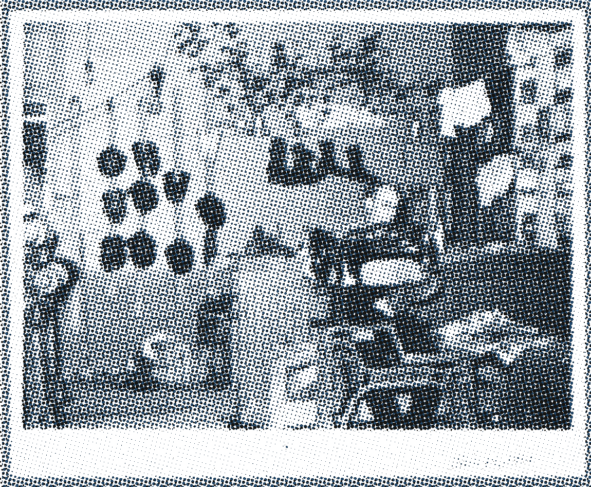
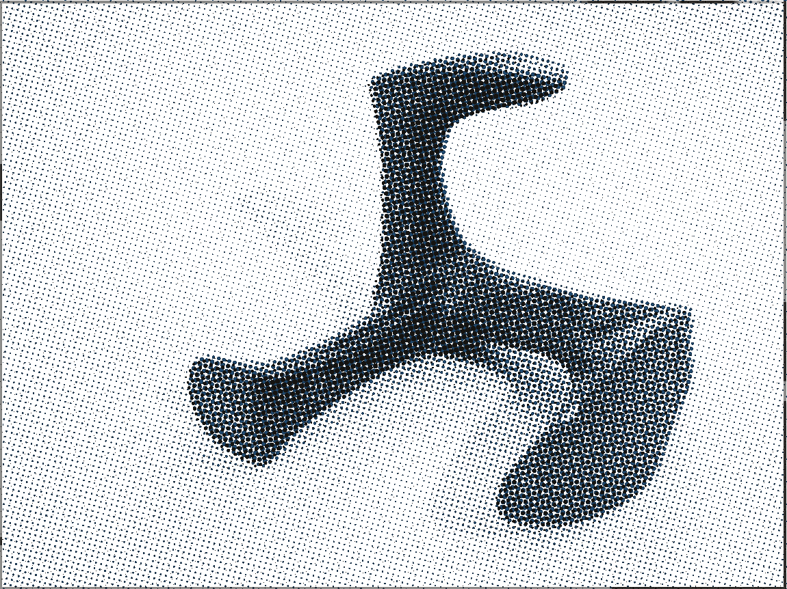
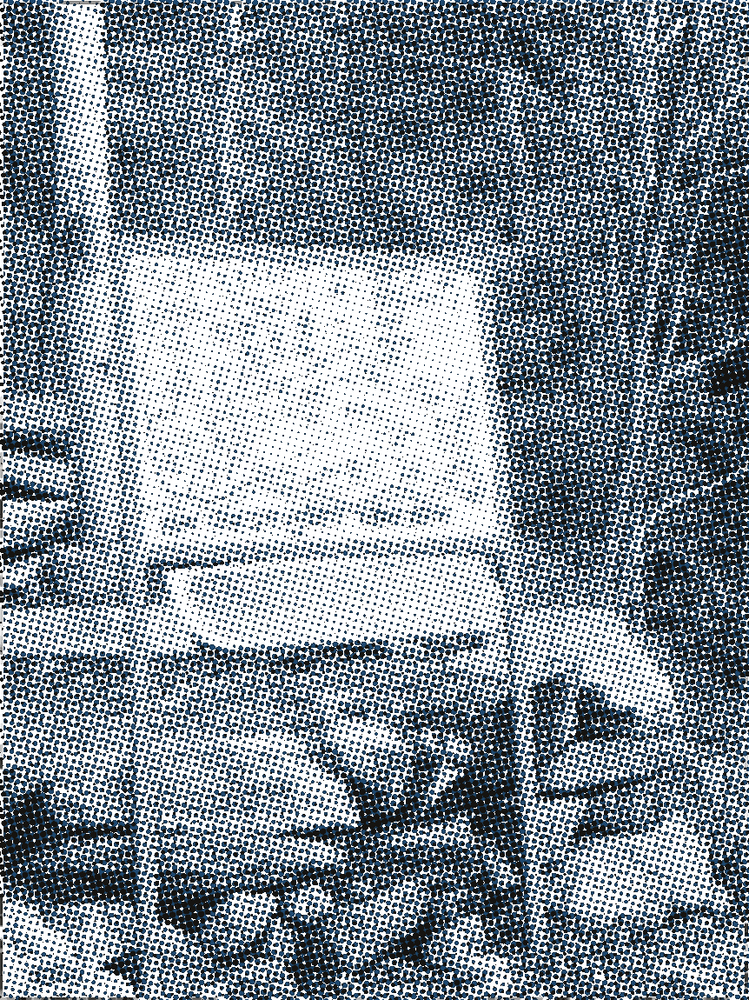
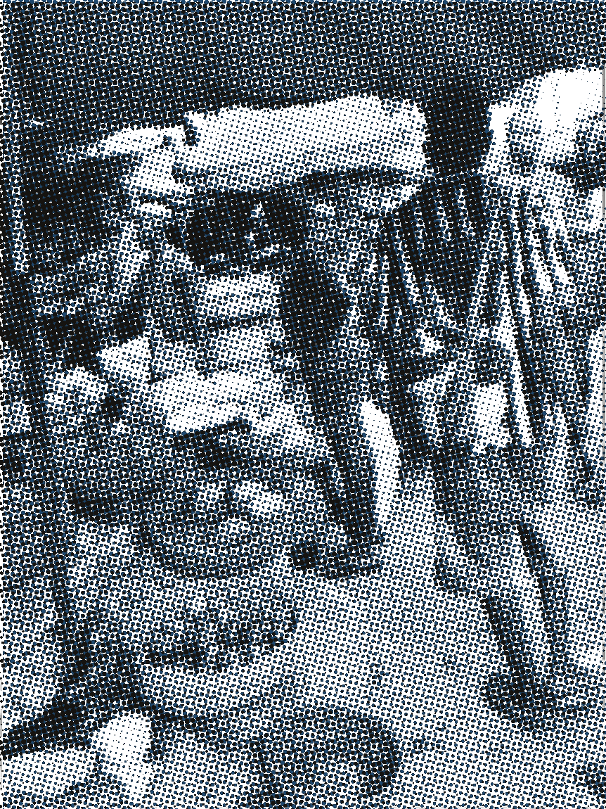
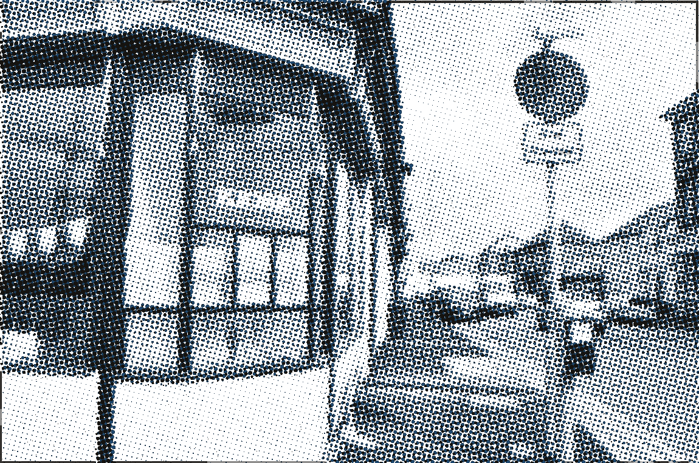

修鞋铺价目板
Akua’s Cobblery & Leather
修鞋 12 元，换鞋跟 25 元，周三下午只收现金，找不开就下次给。
开门时间上午八点到下午五点 · 周三下午只收现金 · 改价一律在板上涂掉重写
今天的价目（元）
板上是修鞋与换跟这一档，10 行；这一档里改过价的有 3 处，都留在板上。
- 修鞋 · 补前掌单只 · 含钉
12.00 - 换鞋跟每双 · 含税
25.00 - 缝开线每 10cm
6.00 - 上油膏小份 200g
8.00 - 换拉链头含料 · 单只
15.00 - 皮鞋改色每双 · 两遍
45.00 - 高跟鞋换钉每双 4 颗
10.00 - 靴筒收窄每双 · 拆线
60.00 - 加鞋垫单只 · 裁切
9.00 - 急件加价2 小时内取
30.00
这一行读错了这行价格昨天改过三次，第 3 次的黑漆盖住原数字，读出来是 25 元而不是 2.5 元，错误码 PAINT-3。请按分量标注再核一遍。
左下角这处被盖掉的数字，原来写的是 2.5：三层黑漆，最新的那层比旧层小 1 毫米，一共盖过三次调价。漆没盖严的地方还看得见旧笔画的起笔。
分量标注怎么读
价目行右侧那一列是计价口径，不是折扣。一眼看不清的时候，按这四条对：
- 单只／每双 补前掌、换拉链头按单只算；换鞋跟、改色、收窄靴筒按双算，两只都做。
- 含钉／含料 钉子、拉链头、鞋蜡都算在价里，不用另付材料钱；自带的料少收 2 元。
- 每 10cm／每 20cm 缝开线按长度量，量到哪收到哪，不足一段按一段算。
- 小份 200g 上油膏按罐算，一罐 200g，够一双皮靴上两遍；剩下的罐子留在店里，下次接着用。
板上这四样工具，价都按它算
- 鞋跟换跟先拆旧钉，钉子重新打 4 颗，跟面磨平才上漆。
- 钉子方头钉，长 12 毫米；钉完敲平，不许露头。
- 刷子上色用两把：一把吃色，一把收边；每把用满 40 分钟才换。
- 秤补皮面按处算，一处 2cm 以内；超过就上秤按重量报。
今天没开门
今天没开门。招牌上写着明天上午八点见，雨太大就九点。
板上的价目照旧，分量标注照旧。明天开门先把上周三那三双靴子的收据补上，收据上的价按今天的价目算。
店、货、布上的花样
六张实拍照片，按 40 线粗网拆成蓝／黑两版压在板上：蓝版吃中间调、整体错位 4px，黑版吃暗部，轮廓外用 3px 手绘描边走一遍。黄版就是这块板自己的底色，留白处透出漆纹。

01
02
03
04
05
06印版源片取自 Wikimedia Commons，逐张作者与许可见 assets/CREDITS.md；分色在构建期用 Pillow 生成，页面里没有任何外链。